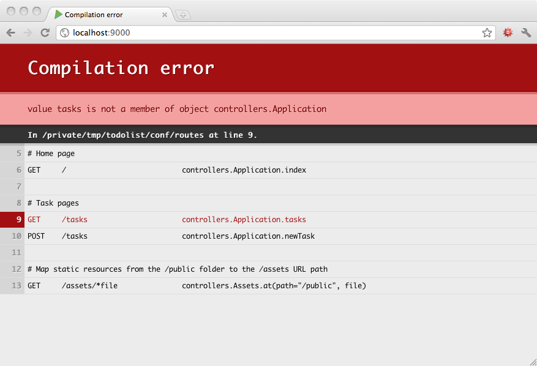
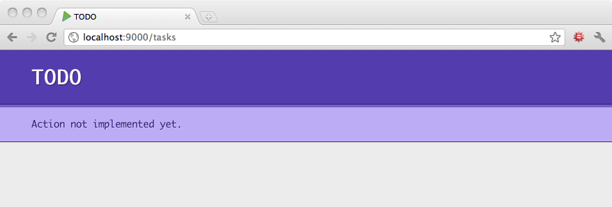

Developing the app - adding routes
For our todo list application, we need a few actions and the corresponding URLs. We start by defining the routes for the application which drive the applications functionallity.
Edit the conf/routes file and add the following routes:
# Home page
GET / controllers.Application.index()
# Tasks
GET /tasks controllers.Application.tasks()
POST /tasks controllers.Application.newTask()
POST /tasks/:id/delete controllers.Application.deleteTask(id: Long)
We create a route to list all tasks, and a couple of others to handle task creation and deletion. The route to handle task deletion defines a variable argument id in the URL path. This value is then passed to the deleteTask action method.
Now if your reload in your browser, you will see that Play cannot compile your routes files:

This error occurs because the action methods the routes reference have not yet been created.
Edit the apps/controllers/Application.java file and add the actions used for the routes as follows:
public class Application extends Controller {
public static Result index() {
return ok(index.render("Your new application is ready."));
}
public static Result tasks() {
return TODO;
}
public static Result newTask() {
return TODO;
}
public static Result deleteTask(Long id) {
return TODO;
}
}
As we are taking an agile approach to the development of this application, we are only returning TODO as result in our actions implementation. This allows us to delay writing of the actions implementation, as we can use the built-in TODO result to return a 501 Not Implemented response. This gives anyone with access to the app a quick way to see how much has been implemented of our application.
Access the live app http://localhost:9000/tasks to see that what that looks like.

The next thing we need to add before starting the action implementation is the index action. It shoud redirect automatically to the tasks list page:
public static Result index() {
return redirect(routes.Application.tasks());
}
A redirect is used instead of ok to specify a 303 response.
See Other response type. We also use the reverse router to get the URL needed to fetch the tasks actions.
Commit your changes locally and deploy
As we have made a significant change to the web app functionality, even though its not complete, we should commit those changes to Git. Getting into the habit of small commits and often helps minimise any merge conflicts when we are working in teams.
Add these changes to your local git repository as follows:
git add .
git commit -m "added new routes and mock actions"
Push this commit to Heroku to deploy the new version of the code using the command
git push heroku master
Reload your browser to check the live website has been updated, or use the command heroku open